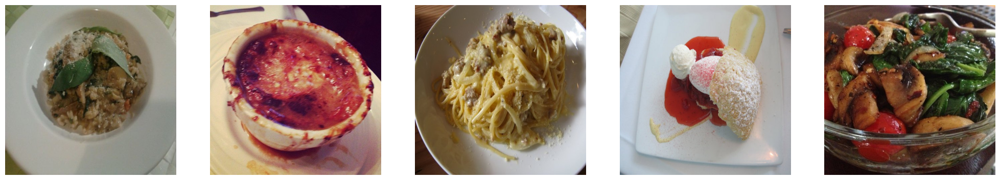
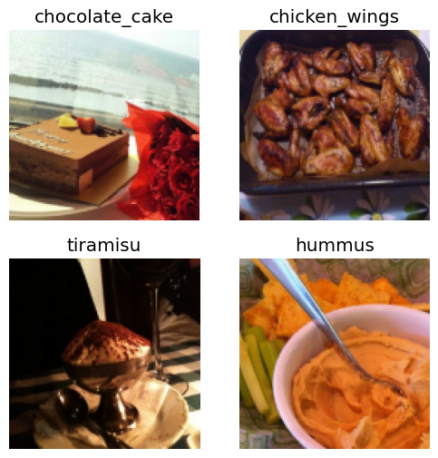
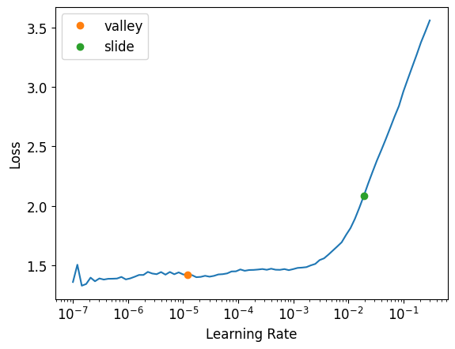

Computer Vision Model(s) Understanding
In previous lecture we referred Which Image models are best? to understand Computer vision models in general which among them works best.
But this time we will be deep diving into these models : Best Vision Model for fine-tuning. We have divided our testing in 2 parts :
- Existing Images : Our models such as ConvNext and ResNet, have been trained on a set of 22,000 images from the ImageNet dataset. It is highly probable that our model has already been exposed to commonly encountered categories such as cats, cars, musical instruments, and more during its training.
- New Images : Here we are using Images that most probably are not in ImagNet dataset, like Satellite Images, Medical Images etc.
Our key findings :
In Case 1, both convnext_tiny_in22k and convnext_tiny emerged as go-to models, selected based on their impressive accuracy and efficient training times.
In Case 2, models like ViT (Vision Transformer) and Swin demonstrated excellent performance. Their transformer architecture proved beneficial in understanding patterns from the data they are not trained on previously. namely - vit_small_patch32_224, vit_small_patch16_224, swin_base_patch4_window7_224_in22k.
Tip - ViT model work only on 224 pixel image so to train our image data on ViT images should be of 224*224 pixels
Install FastAI
#hide
!pip install -Uqq fastbook
!pip install timm
import fastbook
fastbook.setup_book()
import timm
#hide
from fastbook import *
from fastai.vision.widgets import *
from fastai.vision.all import *Requirement already satisfied: timm in /opt/conda/lib/python3.10/site-packages (0.9.16)
Requirement already satisfied: torch in /opt/conda/lib/python3.10/site-packages (from timm) (2.1.2)
Requirement already satisfied: torchvision in /opt/conda/lib/python3.10/site-packages (from timm) (0.16.2)
Requirement already satisfied: pyyaml in /opt/conda/lib/python3.10/site-packages (from timm) (6.0.1)
Requirement already satisfied: huggingface_hub in /opt/conda/lib/python3.10/site-packages (from timm) (0.20.3)
Requirement already satisfied: safetensors in /opt/conda/lib/python3.10/site-packages (from timm) (0.4.2)
Requirement already satisfied: filelock in /opt/conda/lib/python3.10/site-packages (from huggingface_hub->timm) (3.13.1)
Requirement already satisfied: fsspec>=2023.5.0 in /opt/conda/lib/python3.10/site-packages (from huggingface_hub->timm) (2024.2.0)
Requirement already satisfied: requests in /opt/conda/lib/python3.10/site-packages (from huggingface_hub->timm) (2.31.0)
Requirement already satisfied: tqdm>=4.42.1 in /opt/conda/lib/python3.10/site-packages (from huggingface_hub->timm) (4.66.1)
Requirement already satisfied: typing-extensions>=3.7.4.3 in /opt/conda/lib/python3.10/site-packages (from huggingface_hub->timm) (4.9.0)
Requirement already satisfied: packaging>=20.9 in /opt/conda/lib/python3.10/site-packages (from huggingface_hub->timm) (21.3)
Requirement already satisfied: sympy in /opt/conda/lib/python3.10/site-packages (from torch->timm) (1.12)
Requirement already satisfied: networkx in /opt/conda/lib/python3.10/site-packages (from torch->timm) (3.2.1)
Requirement already satisfied: jinja2 in /opt/conda/lib/python3.10/site-packages (from torch->timm) (3.1.2)
Requirement already satisfied: numpy in /opt/conda/lib/python3.10/site-packages (from torchvision->timm) (1.26.4)
Requirement already satisfied: pillow!=8.3.*,>=5.3.0 in /opt/conda/lib/python3.10/site-packages (from torchvision->timm) (9.5.0)
Requirement already satisfied: pyparsing!=3.0.5,>=2.0.2 in /opt/conda/lib/python3.10/site-packages (from packaging>=20.9->huggingface_hub->timm) (3.1.1)
Requirement already satisfied: MarkupSafe>=2.0 in /opt/conda/lib/python3.10/site-packages (from jinja2->torch->timm) (2.1.3)
Requirement already satisfied: charset-normalizer<4,>=2 in /opt/conda/lib/python3.10/site-packages (from requests->huggingface_hub->timm) (3.3.2)
Requirement already satisfied: idna<4,>=2.5 in /opt/conda/lib/python3.10/site-packages (from requests->huggingface_hub->timm) (3.6)
Requirement already satisfied: urllib3<3,>=1.21.1 in /opt/conda/lib/python3.10/site-packages (from requests->huggingface_hub->timm) (1.26.18)
Requirement already satisfied: certifi>=2017.4.17 in /opt/conda/lib/python3.10/site-packages (from requests->huggingface_hub->timm) (2024.2.2)
Requirement already satisfied: mpmath>=0.19 in /opt/conda/lib/python3.10/site-packages (from sympy->torch->timm) (1.3.0)Get data from FastAI of Food
path = Path('/content')
untar_data(URLs.FOOD, data=path)100.00% [5686607872/5686607260 01:54<00:00]
Path('/content/food-101')1. Create Test Dataset
We do not have test dataset let’s randomly create a test folder which will have 15% of the images from train folder & we will not train our model on these images.
import os
import random
import shutil
def move_images_to_test(source_folder, test_folder, percentage=0.1):
# Create the test folder if it doesn't exist
os.makedirs(test_folder, exist_ok=True)
# Iterate through each subfolder in the source folder
for subfolder in os.listdir(source_folder):
subfolder_path = os.path.join(source_folder, subfolder)
# Check if it's a directory
if os.path.isdir(subfolder_path):
# Get a list of all image files in the subfolder
image_files = [f for f in os.listdir(subfolder_path) if f.endswith('.jpg')]
# Calculate the number of images to move
num_images_to_move = int(len(image_files) * percentage)
# Randomly select images to move
images_to_move = random.sample(image_files, num_images_to_move)
# Move selected images to the test folder
for image in images_to_move:
source_path = os.path.join(subfolder_path, image)
dest_path = os.path.join(test_folder, image)
shutil.move(source_path, dest_path)
if __name__ == "__main__":
train_path = Path('/content/food-101/images')
test_path = Path('/content/food-101/test')
move_images_to_test(train_path, test_path, percentage=0.15)df_train_json = pd.read_json('/content/food-101/train.json')
df_train_json.head()| churros | hot_and_sour_soup | samosa | sashimi | pork_chop | spring_rolls | panna_cotta | beef_tartare | greek_salad | foie_gras | tacos | pad_thai | poutine | ramen | pulled_pork_sandwich | bibimbap | beignets | apple_pie | crab_cakes | risotto | paella | steak | baby_back_ribs | miso_soup | frozen_yogurt | club_sandwich | carrot_cake | falafel | bread_pudding | chicken_wings | gnocchi | caprese_salad | creme_brulee | escargots | chocolate_cake | tiramisu | spaghetti_bolognese | mussels | scallops | baklava | edamame | macaroni_and_cheese | pancakes | garlic_bread | beet_salad | onion_rings | red_velvet_cake | grilled_salmon | chicken_curry | deviled_eggs | caesar_salad | hummus | fish_and_chips | lasagna | peking_duck | guacamole | strawberry_shortcake | clam_chowder | croque_madame | french_onion_soup | beef_carpaccio | fried_rice | donuts | gyoza | ravioli | fried_calamari | spaghetti_carbonara | french_toast | lobster_bisque | ceviche | bruschetta | french_fries | shrimp_and_grits | filet_mignon | hamburger | dumplings | tuna_tartare | sushi | cheese_plate | eggs_benedict | cup_cakes | takoyaki | chocolate_mousse | breakfast_burrito | hot_dog | macarons | waffles | seaweed_salad | cannoli | huevos_rancheros | pizza | chicken_quesadilla | pho | prime_rib | cheesecake | ice_cream | omelette | grilled_cheese_sandwich | lobster_roll_sandwich | nachos | oysters | |
|---|---|---|---|---|---|---|---|---|---|---|---|---|---|---|---|---|---|---|---|---|---|---|---|---|---|---|---|---|---|---|---|---|---|---|---|---|---|---|---|---|---|---|---|---|---|---|---|---|---|---|---|---|---|---|---|---|---|---|---|---|---|---|---|---|---|---|---|---|---|---|---|---|---|---|---|---|---|---|---|---|---|---|---|---|---|---|---|---|---|---|---|---|---|---|---|---|---|---|---|---|---|
| 0 | churros/1004234 | hot_and_sour_soup/1002782 | samosa/1008131 | sashimi/1001239 | pork_chop/1000802 | spring_rolls/1002160 | panna_cotta/1001332 | beef_tartare/1000431 | greek_salad/1007149 | foie_gras/1004944 | tacos/1002217 | pad_thai/1004763 | poutine/1005364 | ramen/1002305 | pulled_pork_sandwich/1004064 | bibimbap/1002297 | beignets/1000911 | apple_pie/1005649 | crab_cakes/100038 | risotto/1004412 | paella/1000388 | steak/1000205 | baby_back_ribs/1005293 | miso_soup/1032814 | frozen_yogurt/1000735 | club_sandwich/1017761 | carrot_cake/1000447 | falafel/1003181 | bread_pudding/1004499 | chicken_wings/1003533 | gnocchi/100409 | caprese_salad/1001946 | creme_brulee/1000711 | escargots/1011707 | chocolate_cake/1001084 | tiramisu/1002946 | spaghetti_bolognese/100127 | mussels/1015628 | scallops/1002727 | baklava/1006121 | edamame/1000653 | macaroni_and_cheese/1004059 | pancakes/1009131 | garlic_bread/100478 | beet_salad/1003501 | onion_rings/1017468 | red_velvet_cake/1012312 | grilled_salmon/1002334 | chicken_curry/1004867 | deviled_eggs/1008777 | caesar_salad/1000016 | hummus/1000314 | fish_and_chips/1001881 | lasagna/1004570 | peking_duck/10055 | guacamole/1005906 | strawberry_shortcake/1009217 | clam_chowder/1000678 | croque_madame/1009085 | french_onion_soup/1006274 | beef_carpaccio/1011469 | fried_rice/1004221 | donuts/100076 | gyoza/1003912 | ravioli/1008464 | fried_calamari/100411 | spaghetti_carbonara/1005482 | french_toast/100223 | lobster_bisque/1022294 | ceviche/1006106 | bruschetta/1003796 | french_fries/100148 | shrimp_and_grits/1002860 | filet_mignon/1001477 | hamburger/100057 | dumplings/1000786 | tuna_tartare/1010528 | sushi/100332 | cheese_plate/100370 | eggs_benedict/1000104 | cup_cakes/1005580 | takoyaki/1002167 | chocolate_mousse/1013482 | breakfast_burrito/1000351 | hot_dog/1000288 | macarons/1001193 | waffles/100242 | seaweed_salad/1007167 | cannoli/1007970 | huevos_rancheros/100439 | pizza/1008104 | chicken_quesadilla/1004279 | pho/1005681 | prime_rib/1001089 | cheesecake/1001446 | ice_cream/1012277 | omelette/1001719 | grilled_cheese_sandwich/1003153 | lobster_roll_sandwich/100009 | nachos/100284 | oysters/1008124 |
| 1 | churros/1013460 | hot_and_sour_soup/1003688 | samosa/1011601 | sashimi/1001363 | pork_chop/1006233 | spring_rolls/1003056 | panna_cotta/1003460 | beef_tartare/1005746 | greek_salad/1009138 | foie_gras/1008577 | tacos/1005454 | pad_thai/1009595 | poutine/1019904 | ramen/1002843 | pulled_pork_sandwich/1005662 | bibimbap/1006709 | beignets/1002569 | apple_pie/1014775 | crab_cakes/1003375 | risotto/1009354 | paella/1000412 | steak/100135 | baby_back_ribs/1007102 | miso_soup/1038398 | frozen_yogurt/100093 | club_sandwich/1020435 | carrot_cake/1003032 | falafel/1008896 | bread_pudding/1004540 | chicken_wings/1008504 | gnocchi/100680 | caprese_salad/1024778 | creme_brulee/1004352 | escargots/1014257 | chocolate_cake/1007122 | tiramisu/100504 | spaghetti_bolognese/1004943 | mussels/102234 | scallops/1007089 | baklava/1014880 | edamame/1006400 | macaroni_and_cheese/1012508 | pancakes/1010075 | garlic_bread/1012618 | beet_salad/1005864 | onion_rings/1019009 | red_velvet_cake/1027041 | grilled_salmon/1018852 | chicken_curry/1014843 | deviled_eggs/1010482 | caesar_salad/1000435 | hummus/1000605 | fish_and_chips/1003726 | lasagna/1005119 | peking_duck/101235 | guacamole/1014777 | strawberry_shortcake/1013981 | clam_chowder/100792 | croque_madame/1009303 | french_onion_soup/1008414 | beef_carpaccio/1013939 | fried_rice/1008935 | donuts/100576 | gyoza/1020354 | ravioli/1010610 | fried_calamari/10044 | spaghetti_carbonara/1007514 | french_toast/100344 | lobster_bisque/102237 | ceviche/1013481 | bruschetta/1031947 | french_fries/1008945 | shrimp_and_grits/1003400 | filet_mignon/1002767 | hamburger/100517 | dumplings/100251 | tuna_tartare/1010786 | sushi/1005352 | cheese_plate/1003804 | eggs_benedict/1002786 | cup_cakes/1008351 | takoyaki/1002237 | chocolate_mousse/1018802 | breakfast_burrito/1000669 | hot_dog/1011661 | macarons/1001527 | waffles/100353 | seaweed_salad/1014295 | cannoli/1008331 | huevos_rancheros/100486 | pizza/1008144 | chicken_quesadilla/1009225 | pho/1011443 | prime_rib/1006320 | cheesecake/1004515 | ice_cream/101858 | omelette/1007843 | grilled_cheese_sandwich/10060 | lobster_roll_sandwich/1001432 | nachos/1009513 | oysters/1016229 |
| 2 | churros/1016791 | hot_and_sour_soup/1008185 | samosa/101365 | sashimi/1002556 | pork_chop/1019530 | spring_rolls/1003507 | panna_cotta/1011097 | beef_tartare/1009672 | greek_salad/1010520 | foie_gras/1011711 | tacos/1007867 | pad_thai/1011059 | poutine/1028984 | ramen/1004562 | pulled_pork_sandwich/1008770 | bibimbap/1009730 | beignets/1005233 | apple_pie/1026328 | crab_cakes/1006485 | risotto/1014631 | paella/1004897 | steak/101312 | baby_back_ribs/1007272 | miso_soup/1043862 | frozen_yogurt/1014166 | club_sandwich/102978 | carrot_cake/1011021 | falafel/1016116 | bread_pudding/1006034 | chicken_wings/1009927 | gnocchi/1011446 | caprese_salad/1030908 | creme_brulee/1008678 | escargots/1017301 | chocolate_cake/1007412 | tiramisu/1015080 | spaghetti_bolognese/1005431 | mussels/102600 | scallops/101158 | baklava/1021344 | edamame/1018242 | macaroni_and_cheese/101810 | pancakes/101450 | garlic_bread/1030410 | beet_salad/1006123 | onion_rings/1020126 | red_velvet_cake/1041227 | grilled_salmon/1019062 | chicken_curry/1022681 | deviled_eggs/101298 | caesar_salad/1011441 | hummus/1010716 | fish_and_chips/100968 | lasagna/1015789 | peking_duck/1015952 | guacamole/1016594 | strawberry_shortcake/1017466 | clam_chowder/1019961 | croque_madame/1013932 | french_onion_soup/1012354 | beef_carpaccio/1021977 | fried_rice/1015700 | donuts/100786 | gyoza/1024150 | ravioli/1012118 | fried_calamari/100736 | spaghetti_carbonara/1012273 | french_toast/1006538 | lobster_bisque/1030246 | ceviche/1014769 | bruschetta/1033851 | french_fries/1009455 | shrimp_and_grits/100346 | filet_mignon/100639 | hamburger/100719 | dumplings/100262 | tuna_tartare/101595 | sushi/1012499 | cheese_plate/10057 | eggs_benedict/1008725 | cup_cakes/1009501 | takoyaki/1003289 | chocolate_mousse/1026492 | breakfast_burrito/1002929 | hot_dog/1013916 | macarons/1003207 | waffles/1005295 | seaweed_salad/101671 | cannoli/1015289 | huevos_rancheros/1005451 | pizza/1008844 | chicken_quesadilla/1011413 | pho/1012513 | prime_rib/100945 | cheesecake/1004807 | ice_cream/102595 | omelette/1015300 | grilled_cheese_sandwich/1007544 | lobster_roll_sandwich/100646 | nachos/1011394 | oysters/1023832 |
| 3 | churros/102100 | hot_and_sour_soup/1008701 | samosa/1015943 | sashimi/1007253 | pork_chop/1019569 | spring_rolls/1008736 | panna_cotta/1013000 | beef_tartare/1012128 | greek_salad/1011665 | foie_gras/1017233 | tacos/1015285 | pad_thai/1011238 | poutine/102911 | ramen/101297 | pulled_pork_sandwich/1037387 | bibimbap/1011217 | beignets/1011780 | apple_pie/1028787 | crab_cakes/1013559 | risotto/1017141 | paella/1018124 | steak/1021458 | baby_back_ribs/1008749 | miso_soup/1046478 | frozen_yogurt/1017177 | club_sandwich/102996 | carrot_cake/1024932 | falafel/102463 | bread_pudding/100939 | chicken_wings/101104 | gnocchi/1029180 | caprese_salad/103421 | creme_brulee/1010919 | escargots/1019707 | chocolate_cake/1009391 | tiramisu/1023537 | spaghetti_bolognese/1016511 | mussels/1026090 | scallops/1012281 | baklava/1024334 | edamame/102048 | macaroni_and_cheese/1018941 | pancakes/1014974 | garlic_bread/1031308 | beet_salad/1011225 | onion_rings/102531 | red_velvet_cake/1043495 | grilled_salmon/1026062 | chicken_curry/1027623 | deviled_eggs/1025242 | caesar_salad/1013504 | hummus/1014424 | fish_and_chips/1010511 | lasagna/1019253 | peking_duck/101675 | guacamole/1017481 | strawberry_shortcake/1022070 | clam_chowder/1020283 | croque_madame/1015306 | french_onion_soup/1020156 | beef_carpaccio/102840 | fried_rice/1019981 | donuts/1008454 | gyoza/103201 | ravioli/1014283 | fried_calamari/1018068 | spaghetti_carbonara/1012528 | french_toast/1025962 | lobster_bisque/1030273 | ceviche/1015455 | bruschetta/1034274 | french_fries/1020588 | shrimp_and_grits/1006712 | filet_mignon/1007877 | hamburger/1007277 | dumplings/1002996 | tuna_tartare/1016519 | sushi/1013418 | cheese_plate/1008229 | eggs_benedict/1010197 | cup_cakes/1010744 | takoyaki/1012802 | chocolate_mousse/1027823 | breakfast_burrito/1006144 | hot_dog/101571 | macarons/1003224 | waffles/1011635 | seaweed_salad/1019344 | cannoli/1019714 | huevos_rancheros/1008025 | pizza/1008941 | chicken_quesadilla/1023828 | pho/1019401 | prime_rib/10120 | cheesecake/1017408 | ice_cream/1044117 | omelette/1029915 | grilled_cheese_sandwich/1013343 | lobster_roll_sandwich/100655 | nachos/1013641 | oysters/103236 |
| 4 | churros/1025494 | hot_and_sour_soup/1008924 | samosa/1016296 | sashimi/1010510 | pork_chop/1025391 | spring_rolls/1012525 | panna_cotta/1020036 | beef_tartare/1027680 | greek_salad/1012989 | foie_gras/1023512 | tacos/1023154 | pad_thai/1013966 | poutine/1036670 | ramen/1014141 | pulled_pork_sandwich/1040750 | bibimbap/1014434 | beignets/1019643 | apple_pie/1043283 | crab_cakes/1026455 | risotto/1018227 | paella/1028277 | steak/1032846 | baby_back_ribs/1009028 | miso_soup/1050730 | frozen_yogurt/1017511 | club_sandwich/1040746 | carrot_cake/1038934 | falafel/1033721 | bread_pudding/1018769 | chicken_wings/1012615 | gnocchi/1034178 | caprese_salad/103452 | creme_brulee/1015138 | escargots/1020134 | chocolate_cake/1012239 | tiramisu/1026043 | spaghetti_bolognese/102916 | mussels/1032420 | scallops/1025170 | baklava/1031470 | edamame/1021273 | macaroni_and_cheese/1024001 | pancakes/101644 | garlic_bread/1038093 | beet_salad/1015901 | onion_rings/1037898 | red_velvet_cake/104733 | grilled_salmon/1053214 | chicken_curry/102896 | deviled_eggs/102827 | caesar_salad/1019118 | hummus/1014861 | fish_and_chips/1012859 | lasagna/1028961 | peking_duck/1019978 | guacamole/1023237 | strawberry_shortcake/1030449 | clam_chowder/1023442 | croque_madame/1016269 | french_onion_soup/1020179 | beef_carpaccio/1028573 | fried_rice/1021229 | donuts/101905 | gyoza/1036466 | ravioli/1019632 | fried_calamari/1021250 | spaghetti_carbonara/1014928 | french_toast/102612 | lobster_bisque/1033811 | ceviche/1027751 | bruschetta/1034665 | french_fries/1026314 | shrimp_and_grits/1011064 | filet_mignon/1015486 | hamburger/100930 | dumplings/100410 | tuna_tartare/1052688 | sushi/1018953 | cheese_plate/1008347 | eggs_benedict/1018581 | cup_cakes/1027241 | takoyaki/1016334 | chocolate_mousse/1034251 | breakfast_burrito/1010145 | hot_dog/1017226 | macarons/1004903 | waffles/1013333 | seaweed_salad/1019648 | cannoli/1021048 | huevos_rancheros/1014671 | pizza/1011404 | chicken_quesadilla/1024740 | pho/1021371 | prime_rib/1016126 | cheesecake/1021942 | ice_cream/104465 | omelette/1038109 | grilled_cheese_sandwich/1016030 | lobster_roll_sandwich/100702 | nachos/1014846 | oysters/1038150 |
df_train_txt = pd.read_csv('/content/food-101/train.txt')
df_train_txt.head(10)| apple_pie/1005649 | |
|---|---|
| 0 | apple_pie/1014775 |
| 1 | apple_pie/1026328 |
| 2 | apple_pie/1028787 |
| 3 | apple_pie/1043283 |
| 4 | apple_pie/1050519 |
| 5 | apple_pie/1057749 |
| 6 | apple_pie/1057810 |
| 7 | apple_pie/1072416 |
| 8 | apple_pie/1074856 |
| 9 | apple_pie/1074942 |
We can see that .txt file is of no use
Let’s View Random 5 Food Items
from PIL import Image
import matplotlib.pyplot as plt
# actual path to train image folder
train_path = '/content/food-101/images'
# Function to get a list of all image paths in the specified folder
def get_image_paths(folder):
image_paths = []
for root, dirs, files in os.walk(folder):
for file in files:
if file.lower().endswith(('.png', '.jpg', '.jpeg', '.gif', '.bmp')):
image_paths.append(os.path.join(root, file))
return image_paths
# Function to randomly select and display 5 larger images
def show_random_images(image_paths, num_images=5, display_size=(25, 25)):
selected_images = random.sample(image_paths, min(num_images, len(image_paths)))
fig, axes = plt.subplots(1, num_images, figsize=display_size)
for ax, image_path in zip(axes, selected_images):
img = Image.open(image_path)
img = img.resize((display_size[0]*50, display_size[1]*50)) # Increase size
ax.imshow(img)
ax.axis('off')
plt.show()
# Get a list of all image paths in the specified folder
all_image_paths = get_image_paths(train_path)
# Show 5 random larger images
show_random_images(all_image_paths, num_images=5, display_size=(25, 25))
Remove images that are corrupt
verify_images() will return path of images which are corrupt and using unlink we can remove these files.
fns_train = get_image_files(train_path)
fns_test = get_image_files(test_path)
total_train_imagelength = len(fns_train)
total_test_imagelength = len(fns_test)
failed = verify_images(fns_train)
failed_imagelength = len(failed)
# remove images that are corrupt
failed.map(Path.unlink)
# The images are in train_images, so let's grab a list of all of them:
# trn_path = path/'train'
# files = get_image_files(trn_path)
Image_Count_Dict = {"Total_Train_Image_Count": total_train_imagelength,
"Failed_Train_Image_Count": failed_imagelength,
"Total_Test_Image_Count": total_test_imagelength}
Image_Count_Dict{'Total_Train_Image_Count': 85850,
'Failed_Train_Image_Count': 0,
'Total_Test_Image_Count': 15150}Standardize the size of Images
Let’s check all their sizes. This is faster if we do it in parallel, it helps to execute function in parallel.
from fastcore.parallel import *
def f(o): return PILImage.create(o).size
sizes = parallel(f, fns_train, n_workers=8)
pd.Series(sizes).value_counts()(512, 512) 52962
(512, 384) 12531
(384, 512) 5522
(382, 512) 2431
(512, 382) 2118
...
(489, 512) 1
(469, 512) 1
(405, 512) 1
(407, 512) 1
(279, 512) 1
Name: count, Length: 453, dtype: int64We can see that we have lot’s of different size of images. We need to standardized it.
2. Data Loader
But our images are of size of 512(multiple of 32) , let’s resize it to 480( multiple of 32) .
- Tip If Image is in rectangular format (640,480) with aspect ratio (4:3) then if we want to resize those images do it in same aspect ratio for example (256,192) & if possible set new size to be multiple of 32. CNN works great with 32* size.
dls = ImageDataLoaders.from_folder(train_path, valid_pct=0.2, seed=42,
item_tfms=Resize(480, method='squish'),
batch_tfms=aug_transforms(size=128, min_scale=0.75))
dls.show_batch(max_n=4)
By referring Best Vision models for fine-tuning we can make a case that resnet26d, which is the fastest resolution-independent model which gets into the top-15 lists there
- Goal Is not get best possible result but to get things going with simple models & then improve on it.
3. Model Building
Half-precision floating-point [.to_fp16()] uses 16 bits to store a number, while single precision (float32) uses 32 bits and double precision (float64) uses 64 bits. It is useful in deep learning for its reduced memory usage.
And it is great tool to be used during the inference phase to save memory and computational resources.
With floating point
learn_with_fp = vision_learner(dls, 'resnet26d', metrics=error_rate, path='.').to_fp16()
learn_with_fp.fine_tune(4)| epoch | train_loss | valid_loss | error_rate | time |
|---|---|---|---|---|
| 0 | 2.790304 | 2.355953 | 0.580431 | 06:11 |
| epoch | train_loss | valid_loss | error_rate | time |
|---|---|---|---|---|
| 0 | 2.105901 | 1.847007 | 0.469715 | 06:12 |
| 1 | 1.867976 | 1.591036 | 0.411415 | 06:14 |
| 2 | 1.614650 | 1.446619 | 0.375655 | 06:16 |
| 3 | 1.456076 | 1.420436 | 0.368957 | 06:15 |
Without floating point
learn_without_fp = vision_learner(dls, 'resnet26d', metrics=error_rate, path='.')
learn_without_fp.fine_tune(4)model.safetensors: 0%| | 0.00/64.2M [00:00<?, ?B/s]| epoch | train_loss | valid_loss | error_rate | time |
|---|---|---|---|---|
| 0 | 2.788730 | 2.332079 | 0.579849 | 06:15 |
| epoch | train_loss | valid_loss | error_rate | time |
|---|---|---|---|---|
| 0 | 2.188421 | 1.854993 | 0.471870 | 06:26 |
| 1 | 1.821760 | 1.596297 | 0.414735 | 06:32 |
| 2 | 1.586775 | 1.457398 | 0.379907 | 06:45 |
| 3 | 1.483222 | 1.437040 | 0.376878 | 06:35 |
Comparing both we can say that floating point didn’t come as handy as it should have been accuracy and time are same
Also remember in our 1st task on classification of Big cat with very small data we were having such higher accuracy. However, despite the abundance of images (85,850) in this case, we still encounter significant inaccuracies. This discrepancy suggests that the model is encountering learning challenges, possibly due to issues with the training data or the images being too similar. For instance, there may be minimal variation in certain dishes despite being categorized differently, such as
Veg Pulao & Briyani.
Learning Rate
As discussed earlier Valley & Slide give us best of result so we don’t need to call other 2 functions. Our default value for learning rate is 0.02.
learn_without_fp.lr_find(suggest_funcs=(valley, slide))SuggestedLRs(valley=1.2022644114040304e-05, slide=0.019054606556892395)
So it was the learning rate that cause such high error rate as we can in our plot, let’s reduce near to valley point
Final Model
learn_without_fp.fit(4, lr=0.0002)| epoch | train_loss | valid_loss | error_rate | time |
|---|---|---|---|---|
| 0 | 1.489364 | 1.298432 | 0.340885 | 06:29 |
| 1 | 1.253947 | 1.154729 | 0.307047 | 06:29 |
| 2 | 1.164939 | 1.070023 | 0.283518 | 06:33 |
| 3 | 1.037511 | 1.050543 | 0.275713 | 06:34 |
Let’s Export the model
learn_without_fp.export('Lecture6_Part1_Food_Resnet_Model.pkl')4. Run of Test Data
Read test data
We can now get the probabilities of each class, and the index of the most likely class, from this test set (the 2nd thing returned by get_preds are the targets, which are blank for a test set, so we discard them)
test_files = get_image_files(test_path).sorted()
test_dl = dls.test_dl(test_files)
probs,_,idxs = learn_without_fp.get_preds(dl=test_dl, with_decoded=True)
idxstensor([54, 80, 44, ..., 73, 78, 92])These need to be mapped to the names of each of these type, these names are stored by fastai automatically in the vocab:
dls.vocab['apple_pie', 'baby_back_ribs', 'baklava', 'beef_carpaccio', 'beef_tartare', 'beet_salad', 'beignets', 'bibimbap', 'bread_pudding', 'breakfast_burrito', 'bruschetta', 'caesar_salad', 'cannoli', 'caprese_salad', 'carrot_cake', 'ceviche', 'cheese_plate', 'cheesecake', 'chicken_curry', 'chicken_quesadilla', 'chicken_wings', 'chocolate_cake', 'chocolate_mousse', 'churros', 'clam_chowder', 'club_sandwich', 'crab_cakes', 'creme_brulee', 'croque_madame', 'cup_cakes', 'deviled_eggs', 'donuts', 'dumplings', 'edamame', 'eggs_benedict', 'escargots', 'falafel', 'filet_mignon', 'fish_and_chips', 'foie_gras', 'french_fries', 'french_onion_soup', 'french_toast', 'fried_calamari', 'fried_rice', 'frozen_yogurt', 'garlic_bread', 'gnocchi', 'greek_salad', 'grilled_cheese_sandwich', 'grilled_salmon', 'guacamole', 'gyoza', 'hamburger', 'hot_and_sour_soup', 'hot_dog', 'huevos_rancheros', 'hummus', 'ice_cream', 'lasagna', 'lobster_bisque', 'lobster_roll_sandwich', 'macaroni_and_cheese', 'macarons', 'miso_soup', 'mussels', 'nachos', 'omelette', 'onion_rings', 'oysters', 'pad_thai', 'paella', 'pancakes', 'panna_cotta', 'peking_duck', 'pho', 'pizza', 'pork_chop', 'poutine', 'prime_rib', 'pulled_pork_sandwich', 'ramen', 'ravioli', 'red_velvet_cake', 'risotto', 'samosa', 'sashimi', 'scallops', 'seaweed_salad', 'shrimp_and_grits', 'spaghetti_bolognese', 'spaghetti_carbonara', 'spring_rolls', 'steak', 'strawberry_shortcake', 'sushi', 'tacos', 'takoyaki', 'tiramisu', 'tuna_tartare', 'waffles']Map the number with name
Let’s create a mapping using pandas:
filenames = [path.name for path in test_files]
ss = pd.DataFrame({'image_id': filenames})
ss| image_id | |
|---|---|
| 0 | 1000486.jpg |
| 1 | 100057.jpg |
| 2 | 1000605.jpg |
| 3 | 100093.jpg |
| 4 | 1001084.jpg |
| … | … |
| 15145 | 999449.jpg |
| 15146 | 999550.jpg |
| 15147 | 999858.jpg |
| 15148 | 999875.jpg |
| 15149 | 999961.jpg |
15150 rows × 1 columns
mapping = dict(enumerate(dls.vocab))
results = pd.Series(idxs.numpy(), name="idxs").map(mapping)
results0 hot_and_sour_soup
1 pulled_pork_sandwich
2 fried_rice
3 frozen_yogurt
4 chocolate_cake
...
15145 macaroni_and_cheese
15146 chicken_curry
15147 panna_cotta
15148 poutine
15149 spring_rolls
Name: idxs, Length: 15150, dtype: objectss['label'] = results
ss.to_csv('/kaggle/working/Lecture6_Part1_Food_Resnet_Submit.csv', index=False)
!head Lecture6_Part1_Food_Resnet_Submit.csvimage_id,label
1000486.jpg,hot_and_sour_soup
100057.jpg,pulled_pork_sandwich
1000605.jpg,fried_rice
100093.jpg,frozen_yogurt
1001084.jpg,chocolate_cake
1001089.jpg,baby_back_ribs
1001113.jpg,bibimbap
100148.jpg,french_fries
1002334.jpg,baklava